Laufende Posten
Monatliche Bilanz und vollständige Posten mit eigener Zahlungsfrequenz.
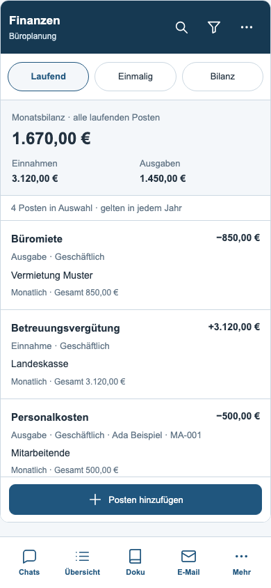
Einmalige Posten
Eigenständige Einnahmen und Ausgaben mit Datum und Kontoart.
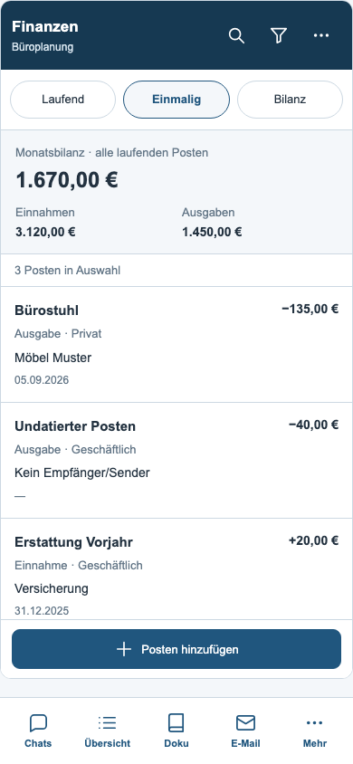
Bilanz
Laufende Monatswerte und einmalige Beträge bleiben getrennt.
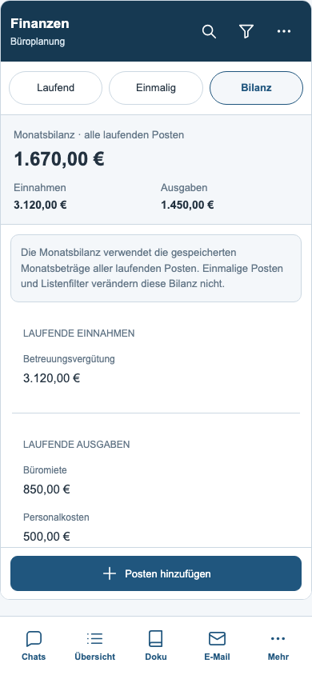
Planung filtern
Art, Kontoart, Gegenüber, Person, Frequenz, Zeitraum und Sortierung.
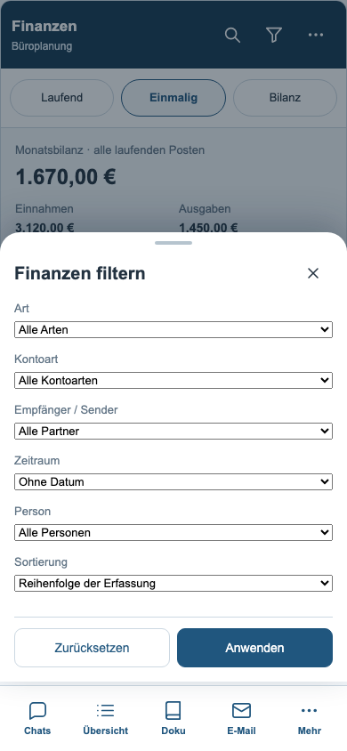
Postendetail
Sämtliche vorhandenen Angaben mit Bearbeiten und Löschen.
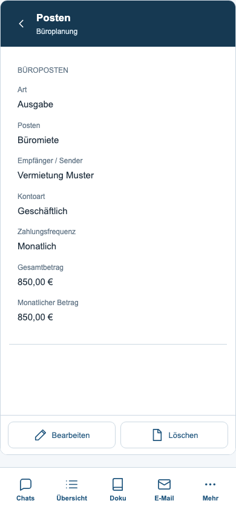
Posten bearbeiten
Bestehende Datenfelder in einem geschützten Formular mit festen Aktionen.
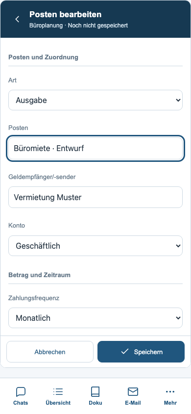
Buchungen
Volltextsuche, Filter, Zuordnungsstatus und Buchungssaldo der Auswahl.
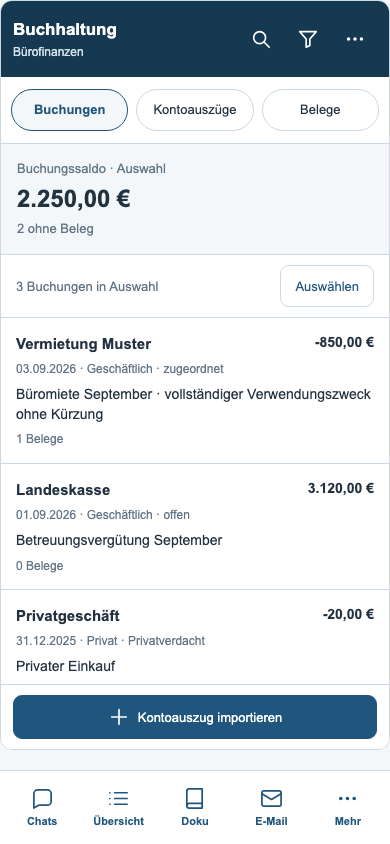
Buchungen filtern
Kontoart, Jahr, Status, Richtung, Belegzuordnung und Sortierung.
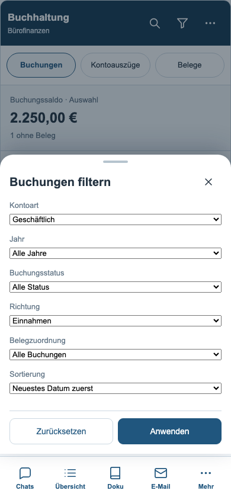
Buchungsdetails
Vollständiger Zweck, Betrag, Kontoart, Ursprung und Belegverknüpfungen.
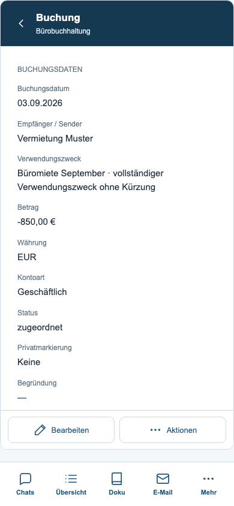
Buchung bearbeiten
Datum, Gegenüber, Zweck, Betrag und Kontoart.
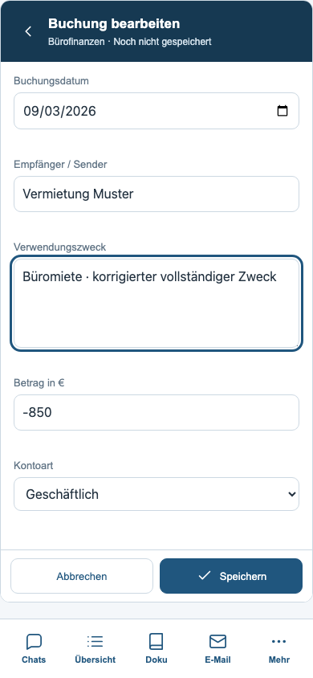
Kontoauszüge
Dateien und Verarbeitungsstand mit eigenem Filterblatt.
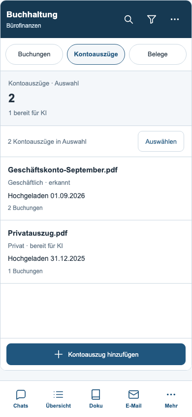
Auszugsdetail
Originaldatei und Sprung zu allen enthaltenen Buchungen.
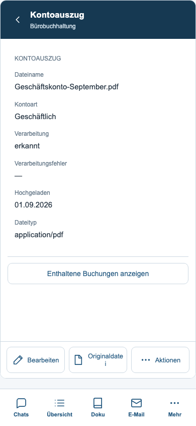
Auszug bearbeiten
Dateiname und Kontoart über die bestehenden Speicherwege ändern.
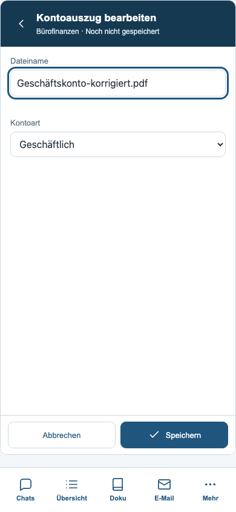
Auszug importieren
CSV, Excel oder PDF hinzufügen und die Kontoart festlegen.
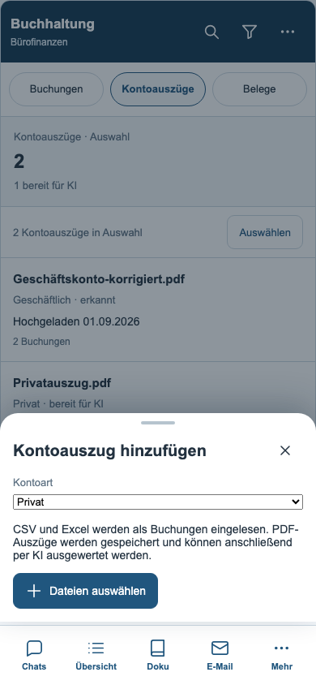
Belege
Erkannte Rechnungsdaten und Zuordnung im Überblick.
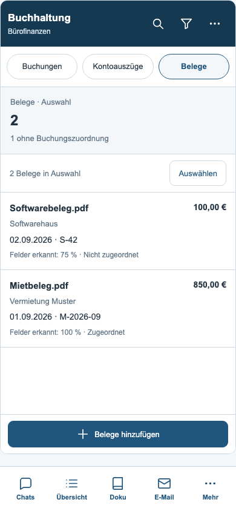
Belegdetails
Rechnungsangaben, Texterkennung und verknüpfte Buchung.
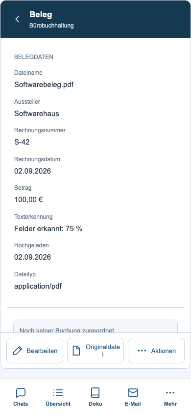
Beleg bearbeiten
Aussteller, Rechnungsnummer, Datum und Betrag.
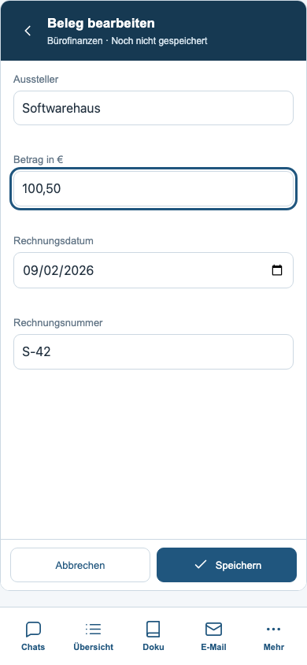
Belegaktionen
Zuordnung, KI-Auswertung, Stempel-PDF und Löschen.
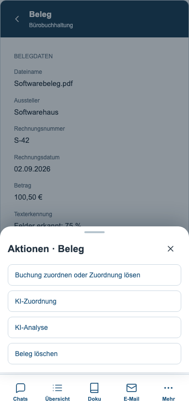
Beleg zuordnen
Vorschläge und sämtliche weiteren Buchungen bleiben wählbar.
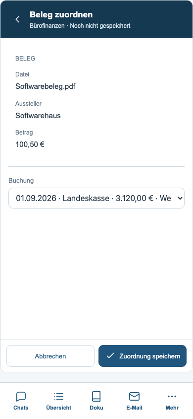
PDF eingelesen
Tatsächlich hochgeladenes synthetisches PDF mit lokaler Texterkennung.
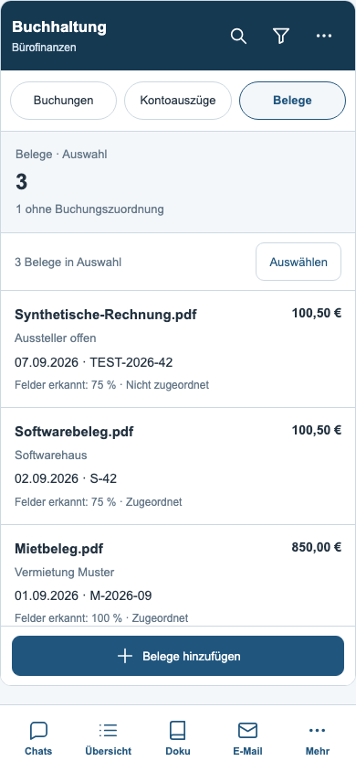
Treffer auswählen
Mehrfachauswahl und bestätigte Löschung im aktuellen Filter.
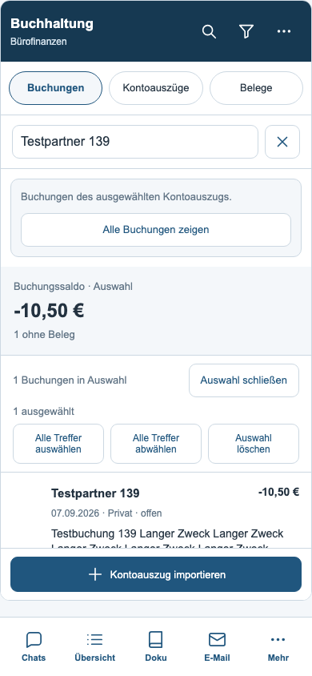
Buchhaltungsaktionen
PDF, Excel, KI-Funktionen und Verbindungen zu den übrigen Finanzbereichen.
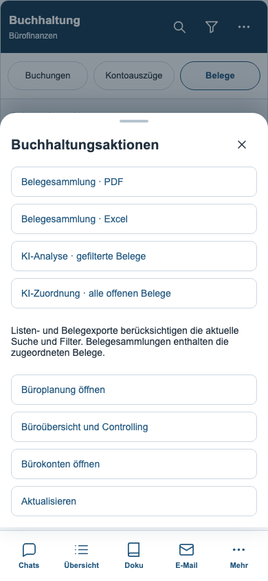
Büroübersicht
Kennzahlen und zwölf Arbeitsvorräte mit den bestehenden Bereichssprüngen.
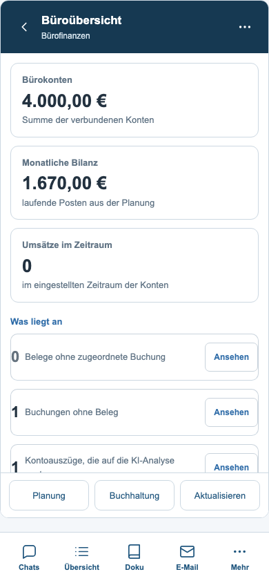
Finanzbereiche
Übersicht, Konten, Buchungen, Belege, Auszüge, Planung und berechtigtes Controlling.
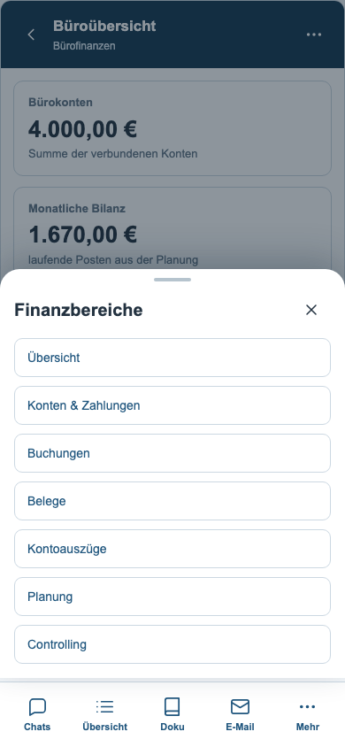
Bürokonten
Direkter Übergang zum bereits umgebauten mobilen Banking.
Controlling
Büroweite Fallauswertung und ursprüngliche PDF-/Excel-Ausgabe.
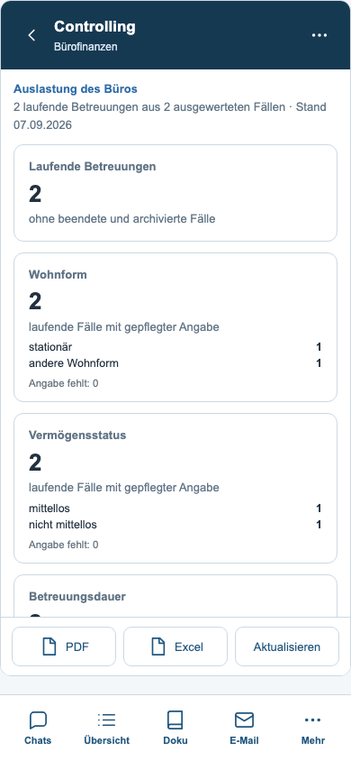
Auslastung je Betreuer
Beschriftete Datensätze anstelle einer breiten Tabelle.
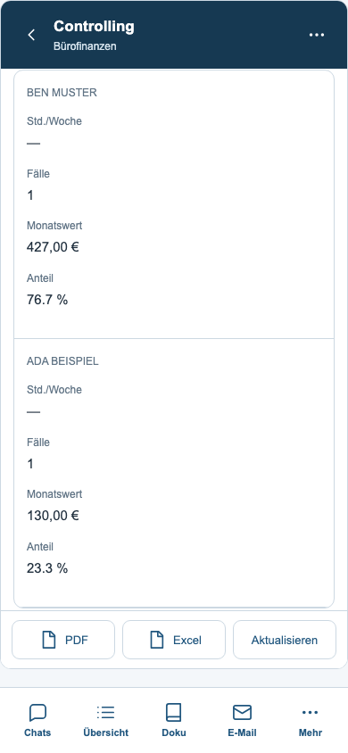
Bestand und Bewegung
Diagramme passen auch auf schmale Smartphone-Displays.
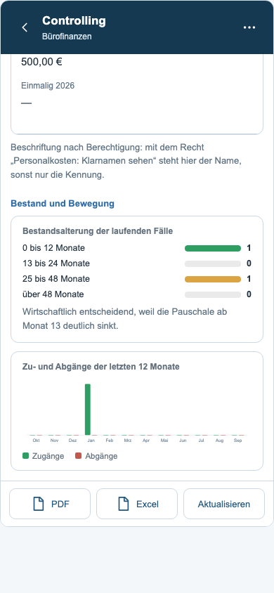
Speicherfehler
Eingaben bleiben bei einem fehlgeschlagenen Schreibzugriff erhalten.
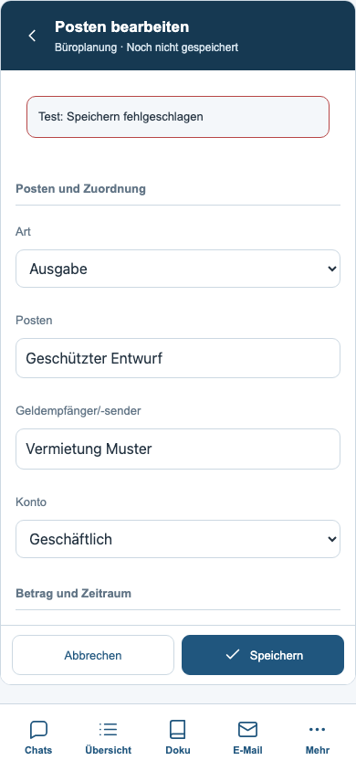
Geöffnete Tastatur
Simulierter verkleinerter Sichtbereich: Navigation verborgen, Speichern erreichbar.
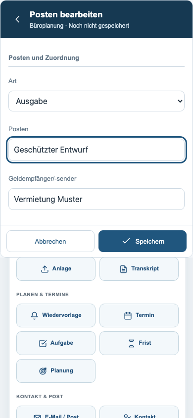
Planung im dunklen Design
Gemeinsame Farben und gut erreichbare Aktionen.
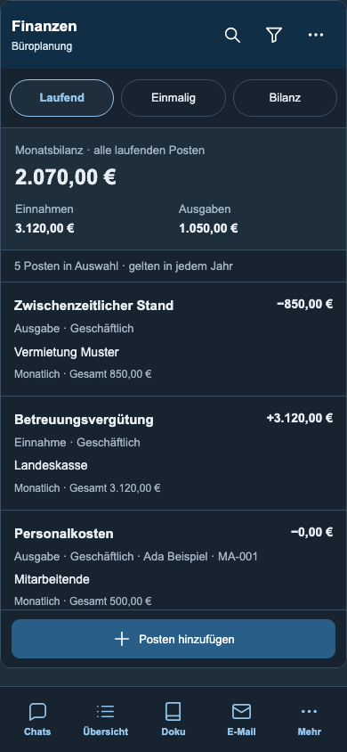
Buchhaltung im dunklen Design
Auch sehr lange Verwendungszwecke bleiben vollständig zugänglich.
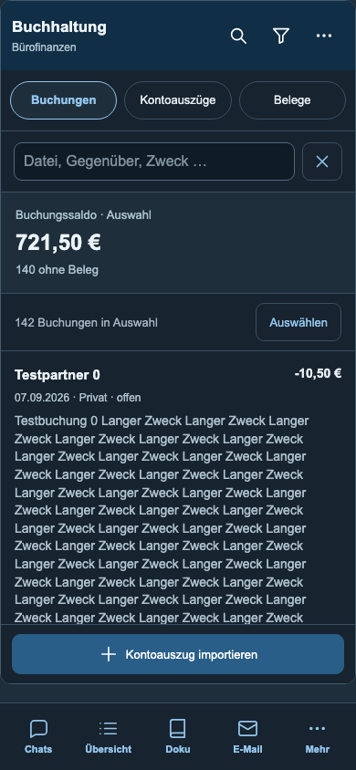